Every screen picture in this manual comes straight from Ammonite's own code:
it is exactly what the round screen shows. A word on words: page always means one of
Ammonite's nine knob pages (page 3 ARP); p. 12 means a page of this booklet.
Quick startfrom power to your own pattern00
The panelpages, columns, sections, and how knobs take over00
How Ammonite playsthree voices, one key, one clock00
The nine pages
1MAINlevels, key, tempo, masters00
2OSCshape and pitch00
3ARPnotes, rhythm, chance00
4ENVELOPEamp, filter and pitch envelopes, glide00
5FILTERcutoff, resonance, type, drive00
6LFOfifteen LFOs, five targets00
7DELAYone echo per oscillator00
8MIXpan, width, reverb00
9KEYprogressions, tuning, view00
Reading the screenrings, colors, four views00
Recipesfive patches to start from00
Scales and chordsevery SCALE setting, spelled out00
Cheat sheetevery knob on one page00
Start here
Quick start
Ammonite plays the moment it has power. Five minutes from here you will
have changed its key, its tempo and its chords.
Turn it down, then plug in. Turn knob 12 (VOLUME) to the
left, connect the stereo output to your amp, mixer or speakers, and power Ammonite from
USB. Then bring VOLUME up.
Listen. Three arpeggios in A minor at 110 BPM. OSC 1 plays the low root and
fifth in quarter notes, OSC 2 runs up and down the chord in eighths, OSC 3 picks
random notes of the scale in sixteenths, leaving a few steps out. No effects are on yet.
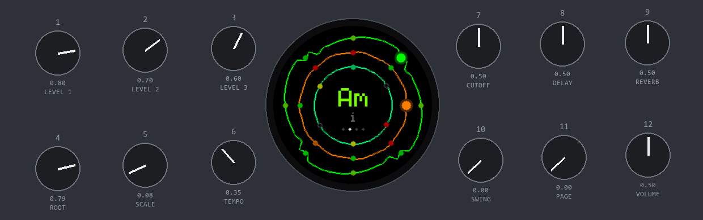
Power-on. Knob 11 points at page 1, MAIN. The screen shows the three
arps as rings (see Reading the screen, p. 00).
Change the tempo. Turn knob 6, TEMPO. The screen shows what
you are turning and its value, then fades back to the rings.
Change the key. Knob 4 is ROOT, knob 5
is SCALE. Try DORIAN or PENTA. All three arps
follow at once; nothing can play a wrong note.
Let the chords move. Turn knob 11 all the way right, to
page 9, KEY. Turn knob 1 (PROG) to POP. Now the
chord changes every bar, and every arp follows it.
Add echoes and space. Knob 11 to page 7, DELAY: turn up
knobs 7–9, the delay SEND of each
oscillator. Then page 8, MIX: knobs 7–9
are the reverb sends.
Two things worth knowing now
Changing page never changes the sound. But when you then touch a knob, its
setting jumps to where the knob points. The whole story is on
p. 00.
Nothing is saved. Switch off and on, and Ammonite starts again from its
power-on sound, with one exception: the page knob 11 points at when you switch on takes
its settings from where its knobs are. With knob 11 on page 1, that means the levels,
key, tempo and masters start where you left the knobs.
Twelve knobs, nine pages
The panel
Twelve knobs control about a hundred settings. They are organised so that
once you know four rules, you can find anything.
1. Knob 11 picks the page
There are nine pages. Turn knob 11 and the screen lists the new
page's knobs. Knob 12 is always VOLUME, whatever the page.
Page
What its knobs do
Knob 10
Manual
1 MAIN
levels, key, tempo, and master cutoff, delay and reverb
SWING
p. 00
2 OSC
each oscillator's shape, octave and starting note
DETUNE
p. 00
3 ARP
what each arp plays and when
SECTION
p. 00
4 ENVELOPE
how each note starts and ends, in volume, filter and pitch
SECTION
p. 00
5 FILTER
brightness and tone of each oscillator
DRIVE
p. 00
6 LFO
slow (or fast) movement of pitch, cutoff, volume, pan, shape
TARGET
p. 00
7 DELAY
each oscillator's own echo
SECTION
p. 00
8 MIX
pan, stereo width and reverb send
SIZE
p. 00
9 KEY
chord progressions, tuning, reverb tone, the screen view
VIEW
p. 00
2. Columns are oscillators
On pages 2 to 8, each column of knobs belongs to one oscillator, in both groups: knobs
147 are OSC 1,
258 are OSC 2,
369 are OSC 3. Each
row does one job for all three: on page 5, for example, knobs 1–3 are the three
CUTOFFs, 4–6 the three RESOs and 7–9 the three TYPEs. The screen lists a page
the same way: 1-3 CUTOFF, 4-6 RESO…
Pages 1 MAIN and 9 KEY are different: they set things for the whole instrument, so every
knob there has its own job.
3. Knob 10 is shared, or picks a section
On most pages knob 10 is one setting shared by all three
oscillators (DETUNE, DRIVE, SIZE…). On four pages there is more to control than nine
knobs can hold, so the page is split into sections and knob 10 chooses one: ARP,
ENVELOPE and DELAY call it SECTION, LFO calls it TARGET. Choosing a section only changes what
knobs 1–9 control. It never changes the sound.
4. A knob takes over when you turn it
Every knob on every page and section remembers its own setting. When you change page (or
section) the knobs themselves stay where they are, so most of them now point somewhere other
than the setting they control. Ammonite leaves every setting alone until you turn its knob.
The moment you do, the setting jumps to where the knob points, and from then on
follows it.
So glance at a knob's pointer before you turn it. If it points far from where the sound
is, expect a jump. A tiny wobble does not count as a turn, so brushing a knob does
nothing.
The screen tells you what you touched
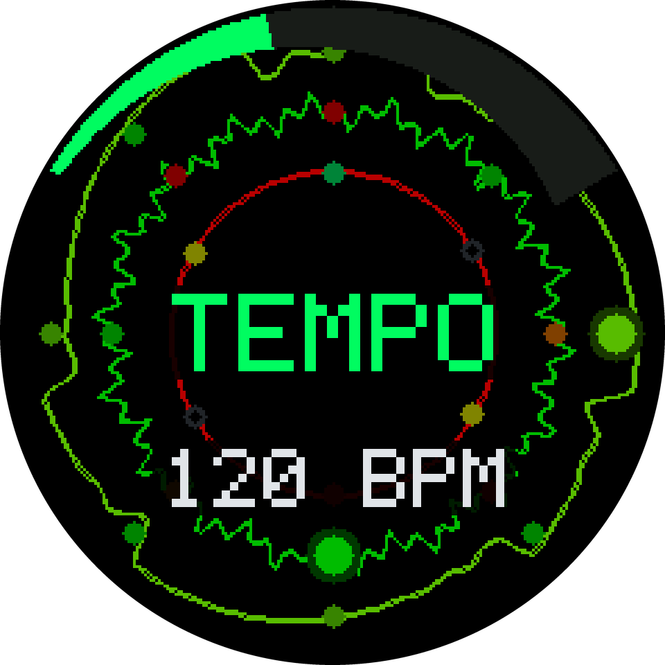
Readout. Turn any knob: its name, value and a gauge. Column pages add
the oscillator (and section) above the name.
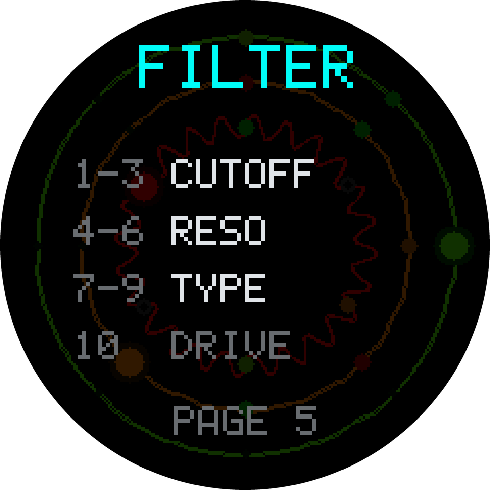
Page map. Turn knob 11: the page's name and what each row of knobs
does.
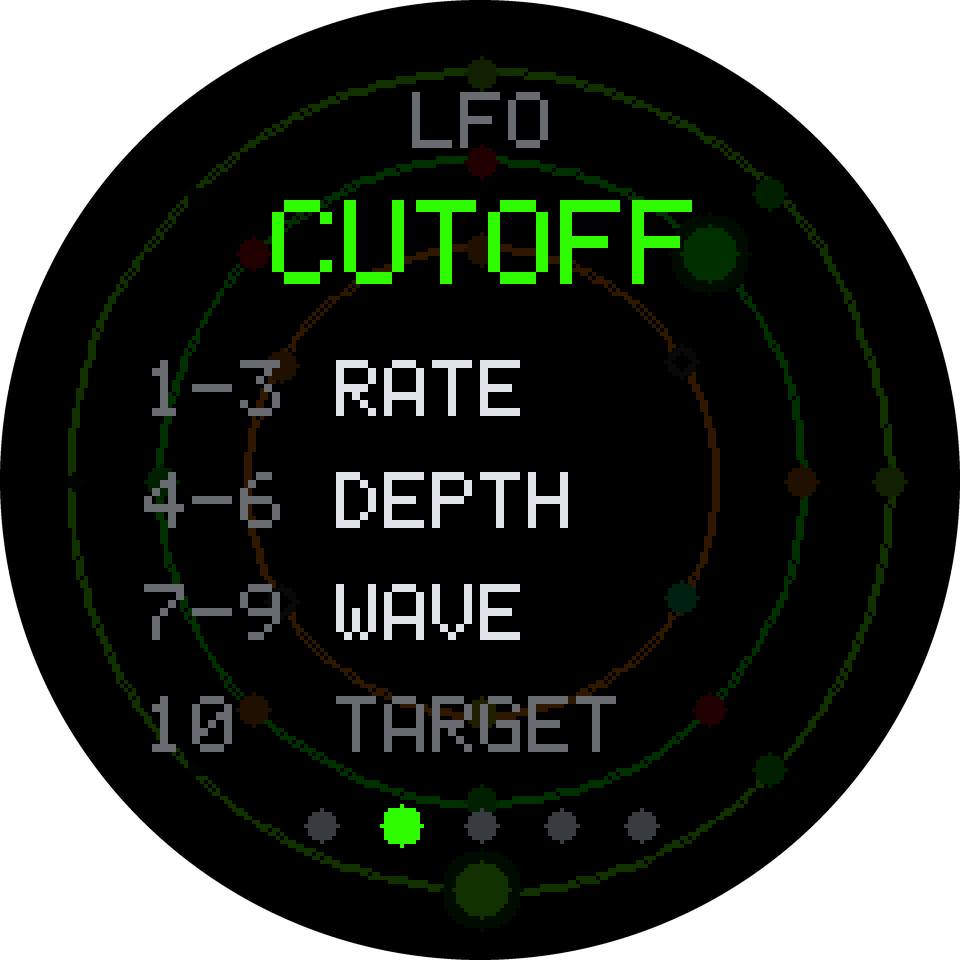
Section map. Turn knob 10 on a page with sections: the section, its
rows, and one dot per section.
About 2.5 seconds after you let go, the text fades and the rings return. Under a section
map, the bright dot is the section you are in. On the LFO page, a colored dot marks a target
that is doing something (its DEPTH is up on some oscillator) and a grey dot one that is off.
The ideas behind the knobs
How Ammonite plays
Three voices, one key and one clock. Everything on the nine pages is a
detail of one of these three.
Three voices
Ammonite has three oscillators, OSC 1 to OSC 3. Each is a complete little synth
with its own arpeggiator, envelopes, filter, LFOs, echo and place in the stereo mix. They
play one note at a time each, so together they make three-part music. Inside, every
oscillator is really two oscillators, pulled slightly apart by DETUNE for a fuller
sound.
One key
You never choose notes on Ammonite. You choose a key (ROOT and SCALE on page 1), a
chord within it, and then, for each oscillator, which of the chord's notes it may use.
That set of notes is the oscillator's pool, and its arp plays from nothing else. Here
is how the power-on sound gets its notes:
Key ROOT A, SCALE MINOR
ABCDEFG
Chord i, the first chord: Am
ACE
OSC 1 pool DEGREE +0, FIFTHS, 1 octave
A2E3
OSC 2 pool DEGREE +2, TRIAD, 2 octaves
C4E4G4C5E5G5
OSC 3 pool DEGREE +4, KEY, 2 octaves
E5F5G5A5B5C6D6E6F6G6A6B6C7D7
DEGREE (page 2) moves a pool's starting note up the scale from the chord's root: OSC 2
starts two scale steps up, on C, so its TRIAD is C E G. POOL and RANGE (page 3) say
which notes to take and over how many octaves; OCTAVE (page 2) places the pool high or low.
The colored dots are each note's screen color (p. 00).
When the chord changes, from a progression or from CHORD on page 9, every pool is rebuilt
on the new chord, and all three oscillators move with it. SCALE can also be a chord
type (MAJ, MIN7, ADD9…) instead of a scale: then the key is that chord, and a
progression moves it around, keeping its color.
One clock
A single master clock (TEMPO on page 1) drives all three arps, the progression, the delay
times and, if you want, the LFOs. Each arp divides the beat its own way (DIVISION), but
every grid starts from the same beat, so however strange the combination, the three never
drift apart.
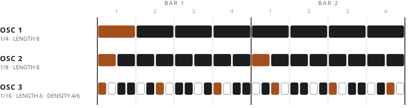
Two bars of the power-on patterns. Each block
is a step; rust marks the first step of a pattern. OSC 3's pattern is 6 steps long, so
it starts over at different places in each bar; its DENSITY of 4/6 leaves out the same two
steps every time round (hollow).
Three things shape the rhythm beyond DIVISION. LENGTH sets how many steps a pattern
has before it starts over; different lengths make patterns that slide against each other.
DENSITY leaves steps out, spread as evenly as possible. SWING (page 1, knob 10)
delays every second step. And RESTART on page 9 can pull every pattern back to its first step
on each bar or each chord.
Arps and drones
Set an oscillator's MODE (page 3) to OFF and it stops
arpeggiating: it holds a single note (the first of its pool) and slides to the new note when
the chord changes. A drone ignores the amp envelope's decay: it fades in over ATTACK and then
simply holds. One drone under two arps, or three drones and no arps at all, are both good
ways to play Ammonite.
1
Page 1 · whole instrument
MAIN
The performance page: how loud each oscillator is, what key and tempo you
are in, and three master knobs that move a whole part of the sound at once.
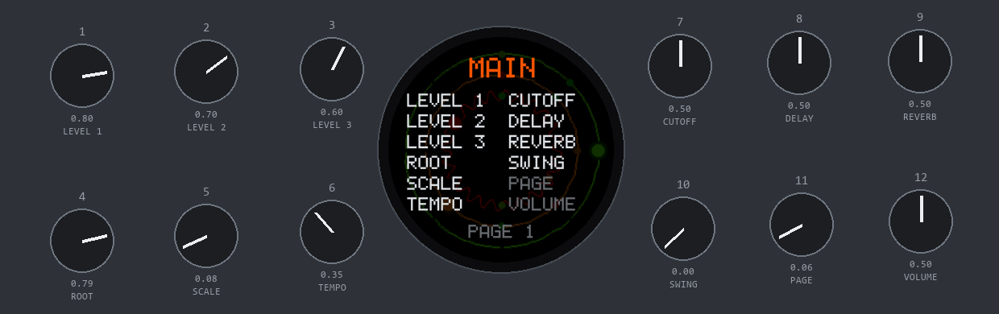
Page 1 just chosen. MAIN is a whole-instrument page: every knob has its
own job. The screen's two columns mirror the panel's two groups.
Knob
Function
Settings
Power-on
What it does
123
LEVEL
0 to 100
80, 70, 60
The volume of OSC 1, 2 and 3.
4
ROOT
C to B
A
The key's home note. Everything transposes with it, progressions included.
5
SCALE
10 scales, then 10 chord types
MINOR
Which notes belong to the key. Turn past BLUES for chord keys, MAJ to ADD9: the key becomes
that chord. Every setting is spelled out on p. 00.
6
TEMPO
40 to 240 BPM
110 BPM
The master clock: arps, chord changes, delay times and synced LFOs.
7
CUTOFF
−3.0 to +3.0 OCT
+0.0 OCT
Moves all three filters together, up to three octaves either way from where page 5 has them.
A performance filter sweep.
8
DELAY
0.0 to 2.0 X
1.0 X
Scales all three delay SENDs (page 7) at once: 0 silences every echo, 2 doubles every send.
9
REVERB
0.0 to 2.0 X
1.0 X
The same for the three reverb sends (page 8).
10
SWING
0 to 100
0
Delays every second step of every arp. At 100 the steps go long-short, 2 to 1: a full
triplet shuffle.
Why the masters sit in the middle. The three master knobs multiply or shift what
the other pages set. At their centre positions they change nothing, so you can dial in each
oscillator's cutoff, echo and reverb carefully on pages 5, 7 and 8, then come back here and
move all three together while you play.
Try this
Turn SCALE slowly from one end to the other while the arps run. Each step is a new
key; the chord keys at the far end are the most colorful.
Sweep CUTOFF down to −3 and back for a whole-mix filter build.
SWING at about 30 loosens sixteenths without sounding like a shuffle.
TEMPO turned to 120 BPM. Page 1 has no columns, so the readout shows no
oscillator.
2
Page 2 · one column per oscillator
OSC
What each oscillator sounds like, how high it plays, and which note of the
chord it starts from.
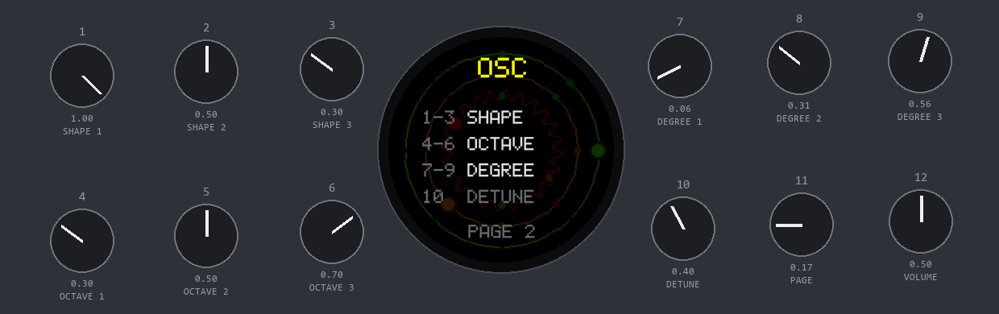
Page 2. Row A (knobs 1–3) is SHAPE, row B (4–6) OCTAVE, row C
(7–9) DEGREE; knob 10 is DETUNE, shared by all three.
Knobs
Function
Settings
Power-on
What it does
123
SHAPE
0 to 100
100, 50, 30
The waveform, morphing smoothly: 0 a pure sine (soft, round),
50 a square (hollow, woody), 100 a saw
(bright, buzzy).
456
OCTAVE
−1 to +3
+0, +1, +2
Moves the oscillator's whole pool by octaves. At +0 the pool starts around the second
octave (A2 at power-on); each step doubles the pitch.
789
DEGREE
+0 to +7
+0, +2, +4
Where the pool starts, in steps up the scale from the chord's root. The power-on values
are the chord's root, third and fifth: with every arp off, the three drone the chord.
10
DETUNE
0.0 to 20.0 CT
8.0 CT
Each oscillator is two oscillators; DETUNE pulls them apart (in cents, hundredths of a
semitone). A little gives a gentle chorus; 20 is wide and wobbly. MIX WIDTH (page 8) can
spread the two apart in stereo.
Try this
A bass line. OSC 1 at SHAPE 0 and OCTAVE
−1 gives a round sub bass under the other two.
Unison. Give OSC 2 and OSC 3 the same DEGREE and OCTAVE as OSC 1, but
different MODEs on page 3: three rhythms on the same notes.
Chord colors. With every arp off, try DEGREEs 0, 2, 4, 6: a seventh chord that
follows the progression.
3
Page 3 · three sections
ARP
Which notes each oscillator plays, when it plays them, and how often it
surprises you.
Every oscillator has its own arpeggiator. On each step it takes the next note from its
pool (p. 00), a handful of notes built from
the key and the chord playing now. All three arps run from one master clock, so however
different their rhythms, they never drift apart.
There are too many settings for one page of knobs, so ARP has three sections.
Knob 10 picks the section. Choosing a section only changes what
knobs 1–9 control, never the sound.
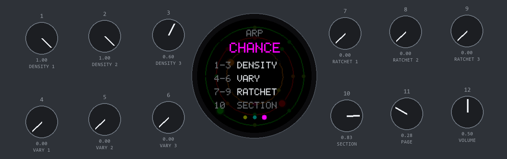
The ARP page with the CHANCE section chosen. Knob 10 has just been
turned, so the screen lists the section's knobs. Each column is one oscillator:
knobs 1, 4 and 7 set OSC 1; knobs 2, 5 and 8 set OSC 2; knobs 3, 6 and 9 set OSC 3.
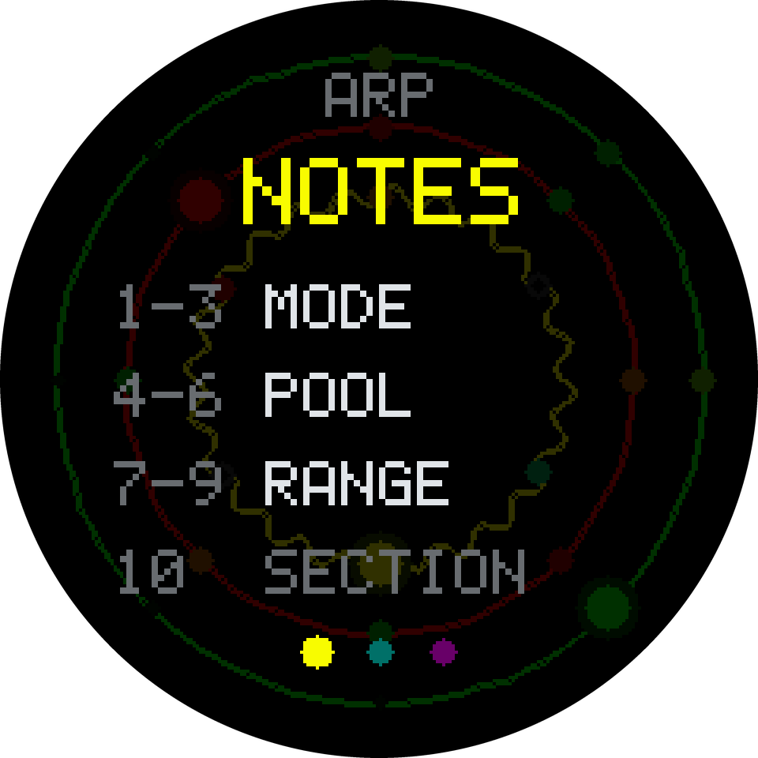
NOTES which notes
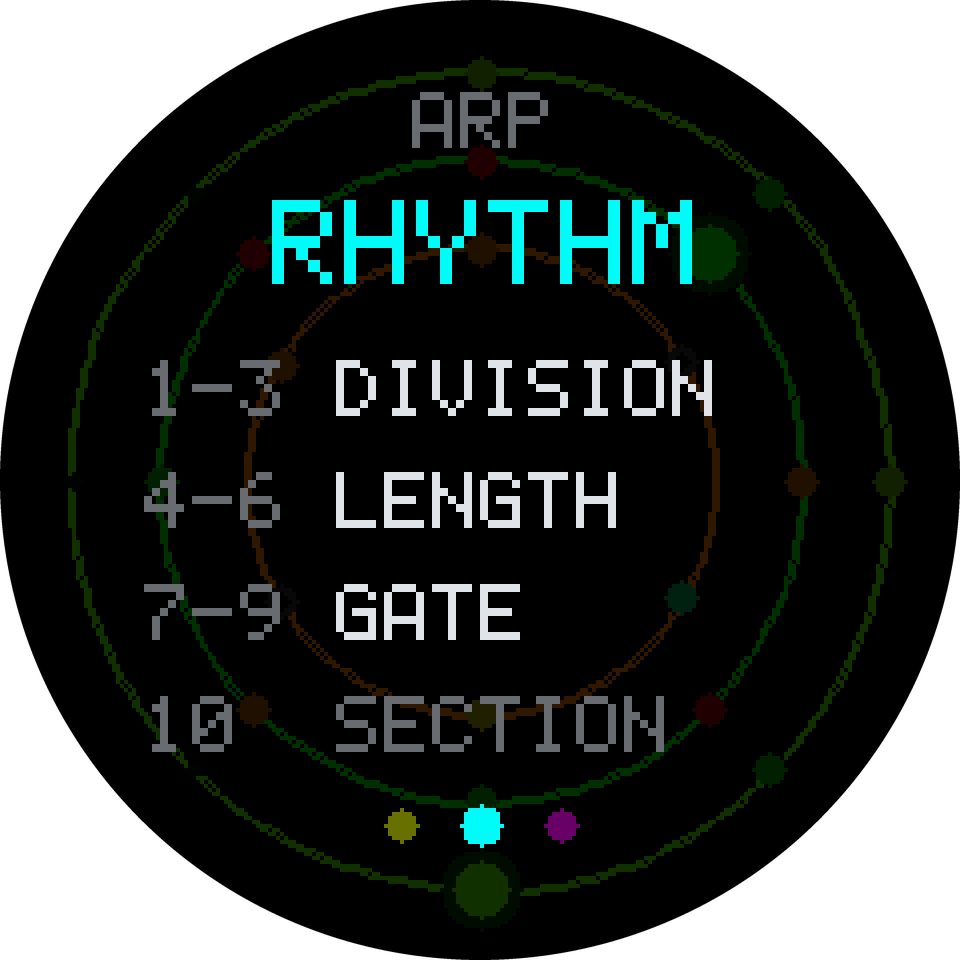
RHYTHM when they play
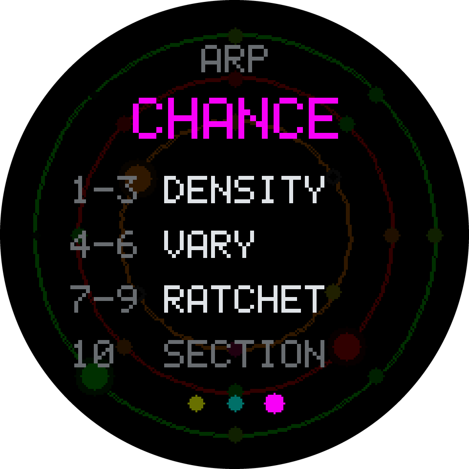
CHANCE how often, how surprising
Notes
Knobs
Function
Settings
Power-on
What it does
123
MODE
OFFLOOPUPDOWNUP-DNRANDOM
UP, UP-DN, RANDOM
The order the arp walks through its pool. LOOP repeats one
note in rhythm. OFF stops the arp: the oscillator holds a
single note, a drone that slides to follow the chord.
456
POOL
KEYTRIAD7THFIFTHSROOT
FIFTHS, TRIAD, KEY
Which notes the arp may use. KEY: every note of the scale.
TRIAD and 7TH: the chord's three or
four notes. FIFTHS: root and fifth. ROOT:
the root alone, in octaves.
789
RANGE
1 OCT2 OCT3 OCT
1, 2, 2 OCT
How many octaves the pool spans.
Where a pool starts is set on page 2, OSC: DEGREE moves
it up the scale from the chord's root, OCTAVE moves it by octaves.
Rhythm
Knobs
Function
Settings
Power-on
What it does
123
DIVISION
1/11/21/41/4T1/81/8T1/161/16T1/32
1/4, 1/8, 1/16
The length of one step, as a note value of the tempo. T is a
triplet: three steps in the time of two.
456
LENGTH
1 to 16 steps
8, 8, 6
How many steps before the pattern starts over. Give the oscillators different
lengths and their patterns slide against each other, lining up again only now
and then.
789
GATE
0 to 100
50
How long each note is held, as a share of its step: short for staccato, full for
legato. It matters most when the amp envelope has some SUSTAIN
(page 4).
Chance
Knobs
Function
Settings
Power-on
What it does
123
DENSITY
none to every step, shown as 3/8
8/8, 8/8, 4/6
How many of the pattern's steps play. The hits are spread as evenly as possible (a
Euclidean rhythm), and the same steps play every time round: a pattern, not a
dice roll.
456
VARY
0 to 100
0
The chance that a step plays a random note from its pool instead of the next one.
789
RATCHET
0 to 100
0
The chance that a step splits into 2 to 4 quick repeats of its note.
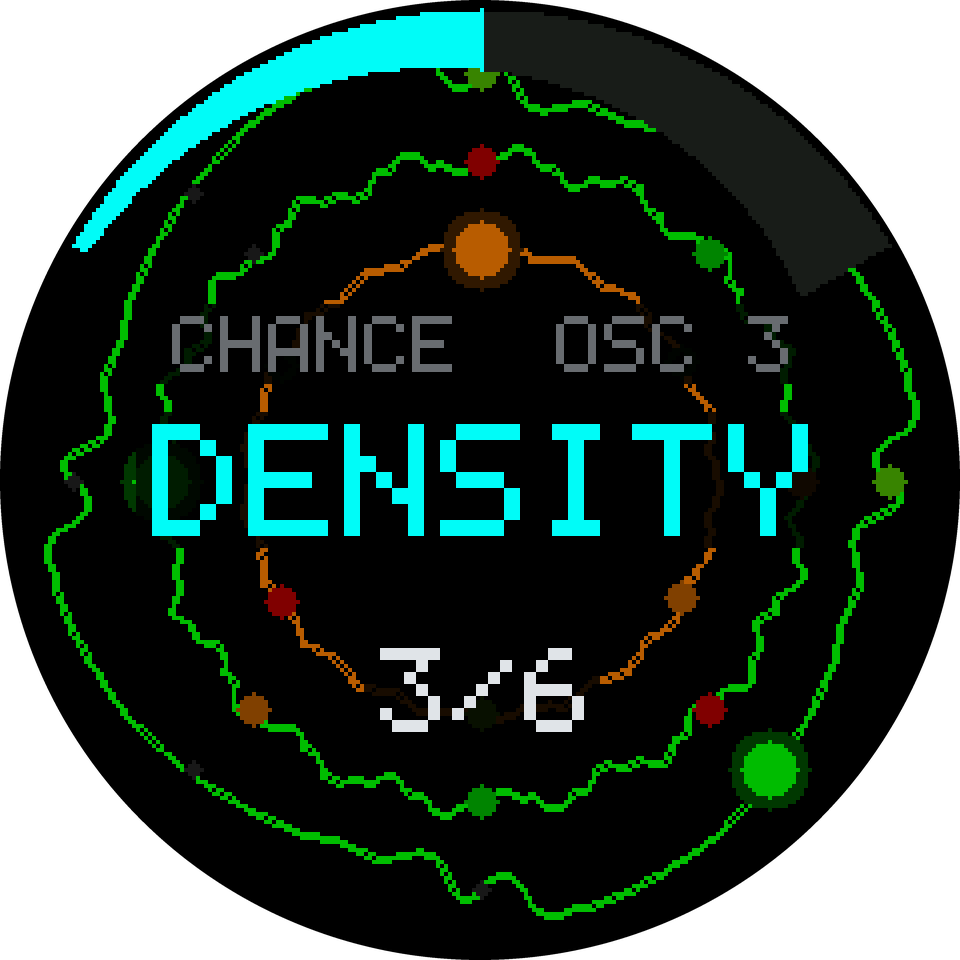
Turning a knob shows its readout: section, oscillator, name and value.
Here OSC 3's DENSITY is at 3/6: three of its six steps play.
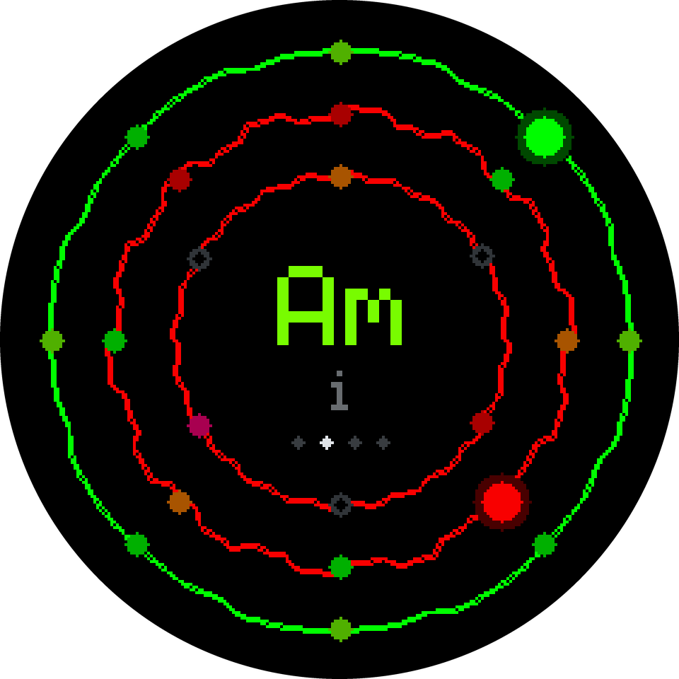
A few seconds later the readout fades. The inner ring (OSC 3) now
shows its three rests as hollow dots, spaced evenly around the ring.
Try this
A classic off-beat. On OSC 1 set LENGTH8 and DENSITY3/8:
the tresillo, the 3-3-2 rhythm under half of all pop music.
Patterns that drift. Set DIVISION to 1/8
on all three oscillators and LENGTH to 8, 7 and 5. The three
patterns only line up again after 280 steps.
A little life. On the fastest oscillator, raise VARY to
about 20 and RATCHET to about 10.
4
Page 4 · three sections
ENVELOPE
What happens inside each note: how its volume rises and falls, how the
filter opens with it, and how its pitch arrives.
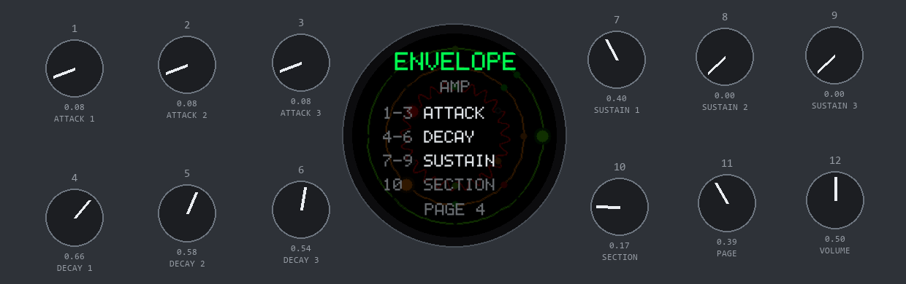
Page 4 just chosen, AMP section. Knob 10 switches between AMP, FILTER and
PITCH.
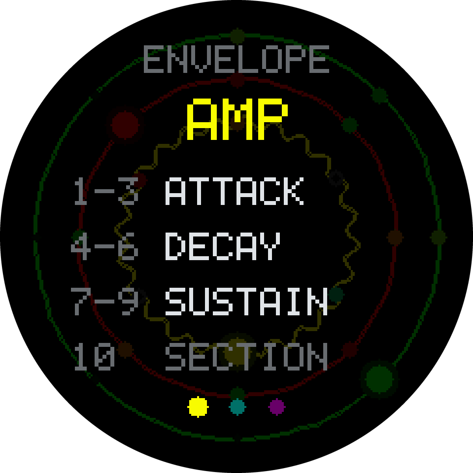
AMP volume of each note
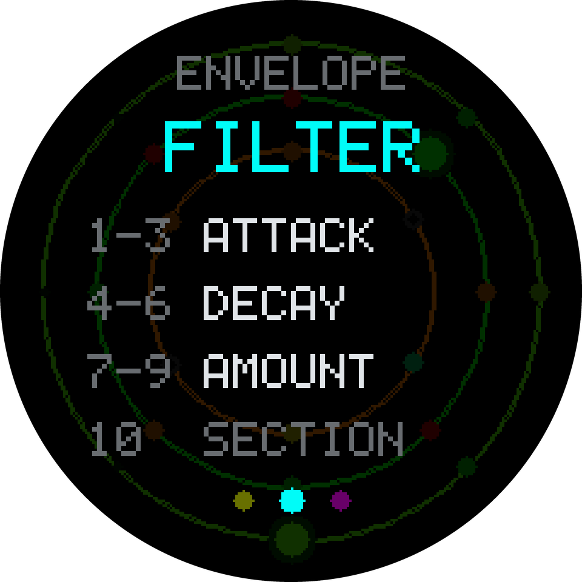
FILTER a filter sweep per note
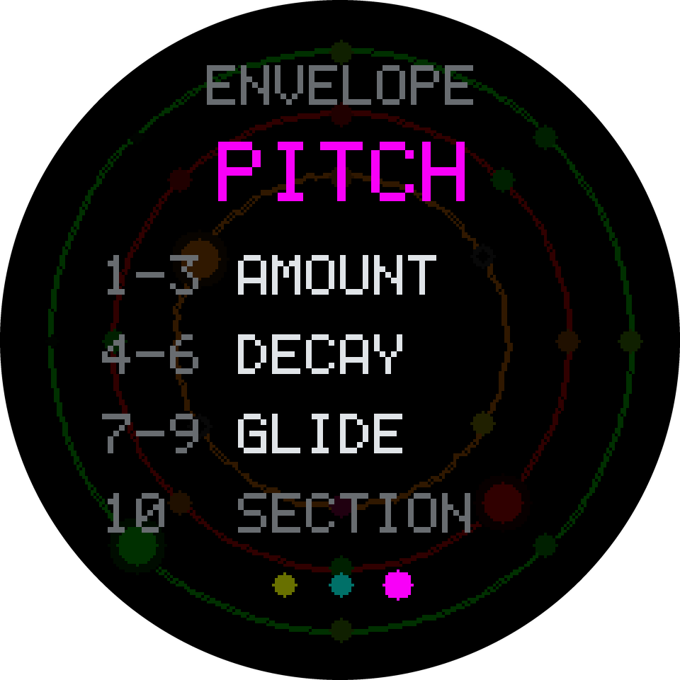
PITCH how each note arrives
Amp
Knobs
Function
Settings
Power-on
What it does
123
ATTACK
1 MS to 4.1 S
2 MS
How long a note takes to reach full volume. Short is a click-free hit; long is a swell.
456
DECAY
5 MS to 4.0 S
401, 249, 180 MS
How long it takes to fall to the SUSTAIN level, and also how long the note takes to
fade out once its GATE ends.
789
SUSTAIN
0 to 100
40, 0, 0
The level a note holds while its GATE (page 3) lasts. 0 makes
every note a pluck that dies away over DECAY.
A new note starts from wherever the last one had got to, so fast patterns
never click. An oscillator whose MODE is OFF (a drone) fades in over ATTACK and then holds.
Filter
Knobs
Function
Settings
Power-on
What it does
123
ATTACK
1 MS to 4.1 S
2 MS
How long the filter takes to open to its peak after each note starts.
456
DECAY
5 MS to 4.0 S
249 MS
How long it takes to close back to the CUTOFF set on page 5.
789
AMOUNT
−4.0 to +4.0 OCT
+0.0 OCT
How far each note moves the cutoff. Positive opens it (brighter at the start of the
note), negative closes it (the note starts dark and opens up). 0 switches it off.
Pitch
Knobs
Function
Settings
Power-on
What it does
123
AMOUNT
−12 to +12 ST
+0 ST
Each note starts this many semitones away from its pitch and slides into place.
456
DECAY
5 MS to 997 MS
24 MS
How long that slide takes. A few milliseconds makes a click or a bell-like ping; longer
makes a swoop.
789
GLIDE
0 MS to 1.0 S
0 MS
Portamento: each arp note slides from the last one instead of jumping. Drones always
slide a little (about 0.4 s) when the chord changes; a longer GLIDE slows that too.
Try this
Pads. ATTACK around 1 S, SUSTAIN 80, GATE 100 on page 3, and a slow DIVISION such as 1/2.
Squelch. FILTER AMOUNT +3.0 OCT, FILTER DECAY about 150 MS, with
CUTOFF low and RESO high on page 5.
Bells. SHAPE 0 on page 2, PITCH AMOUNT +12 ST, PITCH DECAY
8 MS, AMP DECAY about 900 MS. See the recipe on
p. 00.
5
Page 5 · one column per oscillator
FILTER
Each oscillator has its own filter: the main way to make it brighter or
darker, thinner or rounder.
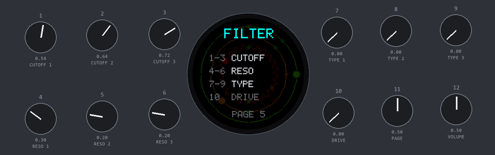
Page 5. CUTOFF, RESO and TYPE per oscillator; knob 10 is DRIVE, shared.
Knobs
Function
Settings
Power-on
What it does
123
CUTOFF
80 HZ to 12.0 KHZ
1.2, 2.0, 3.0 KHZ
The filter's frequency. For the low-pass type: lower is darker and softer.
456
RESO
0 to 100
30, 20, 20
Resonance: a peak at the cutoff. Higher values whistle and sing, especially when the
cutoff moves.
789
TYPE
LPLP-BPBPBP-HPHP
LP
A smooth morph from low-pass (keeps the lows) through band-pass (a narrow, nasal band)
to high-pass (keeps the highs, thin and airy).
10
DRIVE
0 to 100
0
Pushes all three oscillators into soft saturation before their filters: warmer, then
grittier. The level stays roughly the same.
Four things move the cutoff. The CUTOFF knob here sets where each filter rests.
On top of it come the master CUTOFF on page 1 (all three at once), the FILTER envelope on
page 4 (with every note) and the CUTOFF LFO on page 6 (slowly, or not so slowly). They add
up, so a filter can move a long way.
Try this
TYPE BP with RESO around 60 turns a saw into a vowel-like,
talking sound.
Put OSC 3 on HP: its high arp becomes a thin shimmer
over the others.
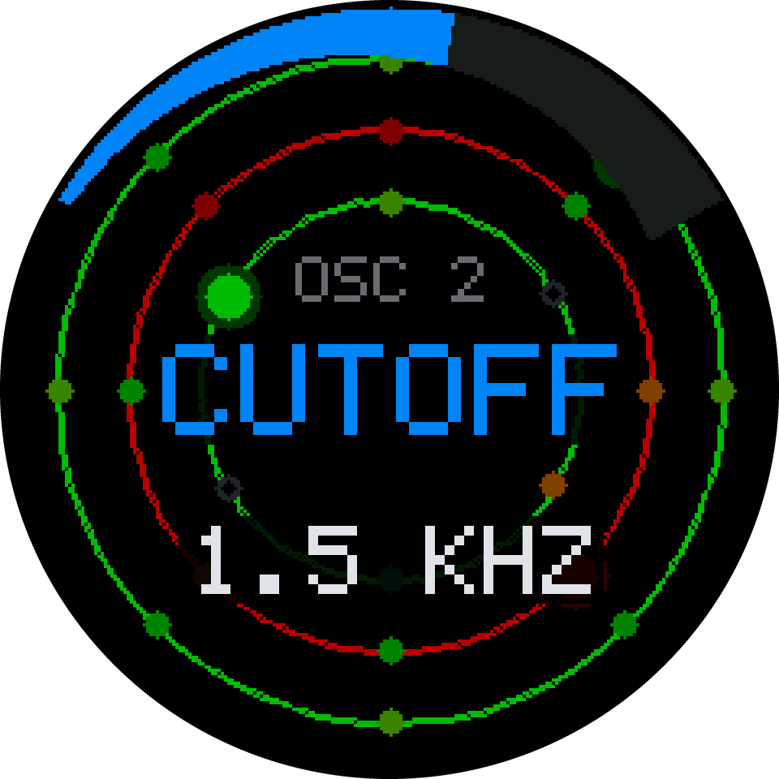
Knob 2 turned: OSC 2's CUTOFF at 1.5 KHZ.
6
Page 6 · five targets
LFO
Movement. Each oscillator has five LFOs, one for each thing they can move:
pitch, cutoff, volume, pan and shape. That is fifteen in all, each with its own speed.
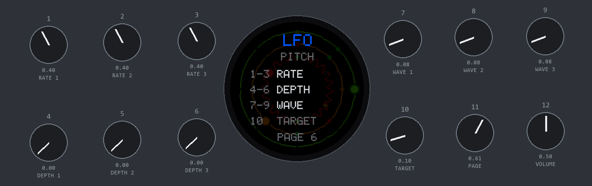
Page 6, PITCH target. Knob 10 is called TARGET here: it picks what the
LFOs on knobs 1–9 move.
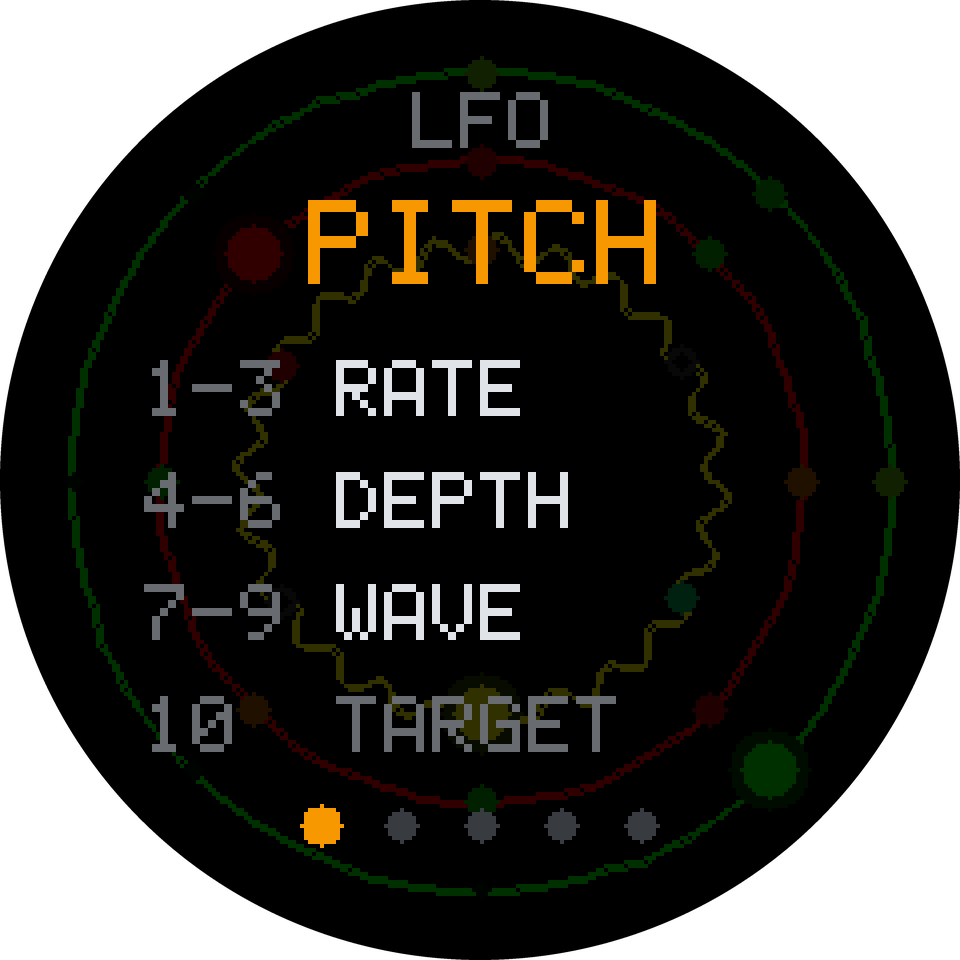
PITCHCUTOFF
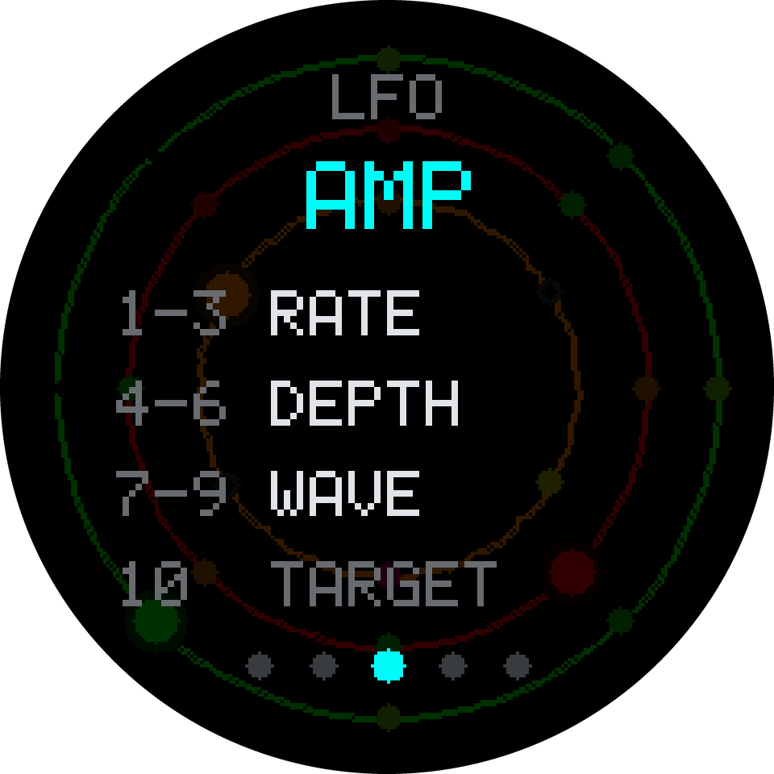
AMP
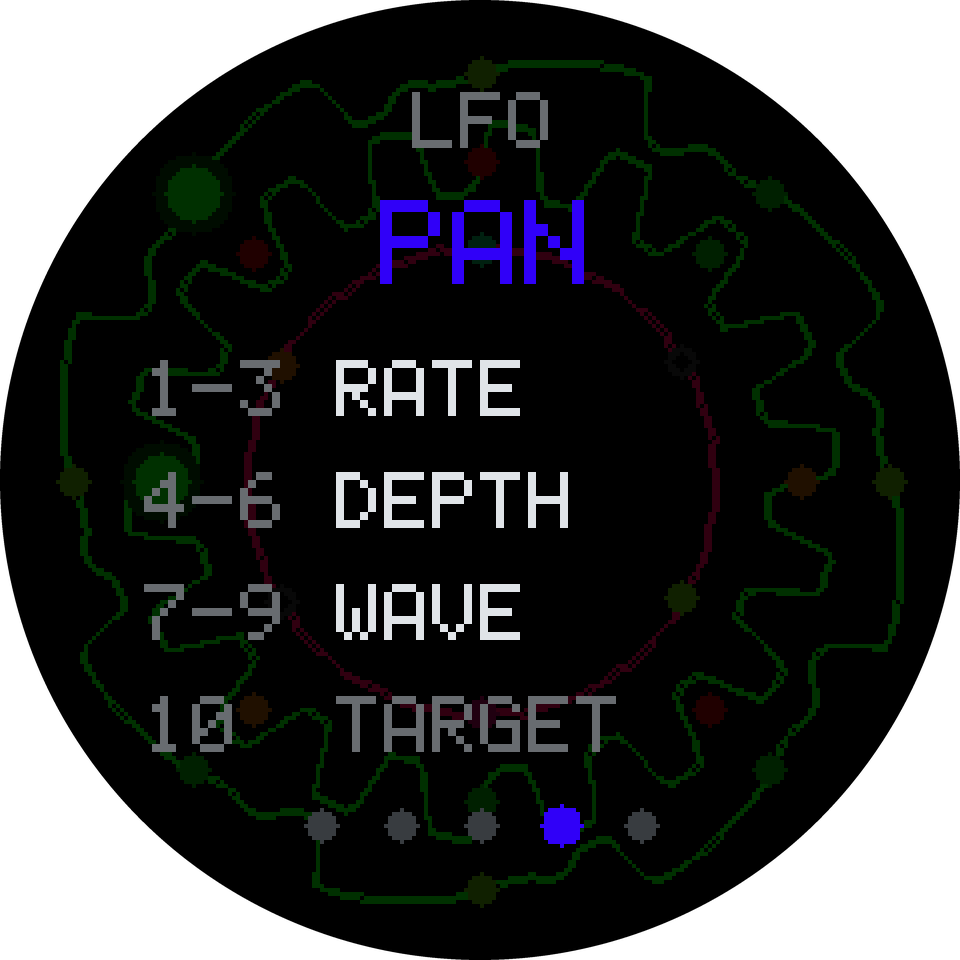
PAN
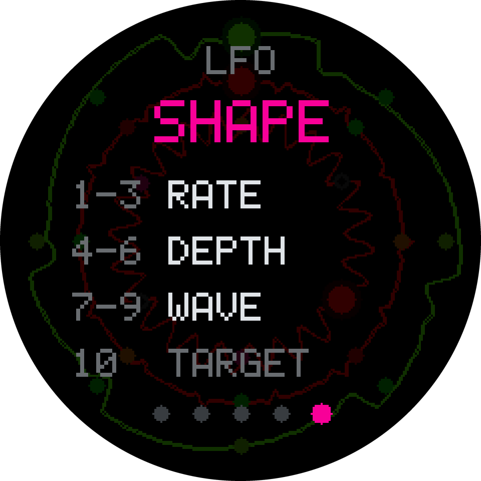
SHAPE
Every target has the same three rows. At power-on every DEPTH is 0, so the dots of the
other targets are grey: an LFO does nothing until you raise its DEPTH.
Knobs
Function
Settings
Power-on
What it does
123
RATE
0.02 to 20.0 HZ; with LFO SYNC on TEMPO: 4 BARS2 BARS1 BAR1/21/41/4T1/81/8T1/16
0.32 HZ (CUTOFF: 0.09, 0.13, 0.17 HZ)
How fast the LFO cycles: from about once a minute to a buzz. With LFO SYNC (page 9) set
to TEMPO, RATE picks a note length instead, and the LFO locks to the bar.
456
DEPTH
0 to 100
0
How much it moves its target (table below).
789
WAVE
SINETRISAWSQUARES+HDRIFT
SINE
The movement's shape. S+H jumps to a new random value each
cycle; DRIFT wanders smoothly from one random value to the next.
Target
At DEPTH 100
Sounds like
PITCH
up and down one semitone
vibrato, or a seasick wobble when slow
CUTOFF
three octaves either way
a filter that breathes or wah-wahs
AMP
dips all the way to silence (never louder)
tremolo, or a chopped gate with SQUARE
PAN
swings from full left to full right
notes moving around the room
SHAPE
50 either side of the SHAPE setting
a tone that keeps changing color
Try this
Slow life. CUTOFF target, DEPTH about 30 on all three: the power-on rates are
slow and all different, so the three filters drift in and out of step.
Rhythmic chop. Set LFO SYNC to TEMPO on page 9, then AMP target, RATE
1/8, WAVE SQUARE, DEPTH 100 on a drone.
Wide arps. PAN target, WAVE S+H, RATE about 4 HZ: every
few notes land somewhere new in the stereo field.
7
Page 7 · two sections
DELAY
Each oscillator has its own stereo echo, timed to the tempo. Three
delays, three different rhythms of repeats.
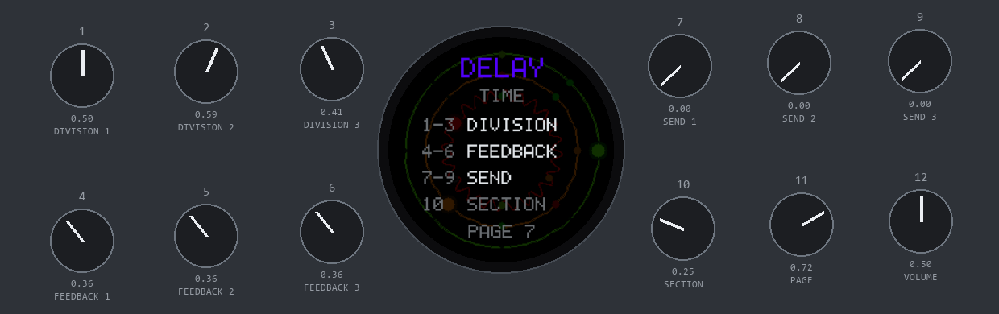
Page 7, TIME section. Knob 10 switches between TIME and COLOR. All the
SENDs start at 0: turn one up to hear its echo.
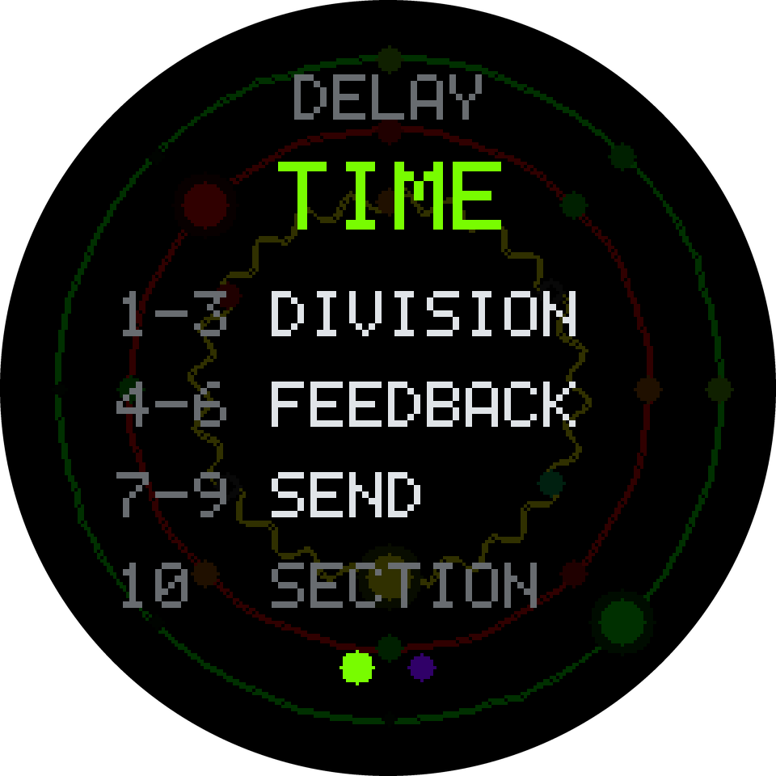
TIME when the echoes come
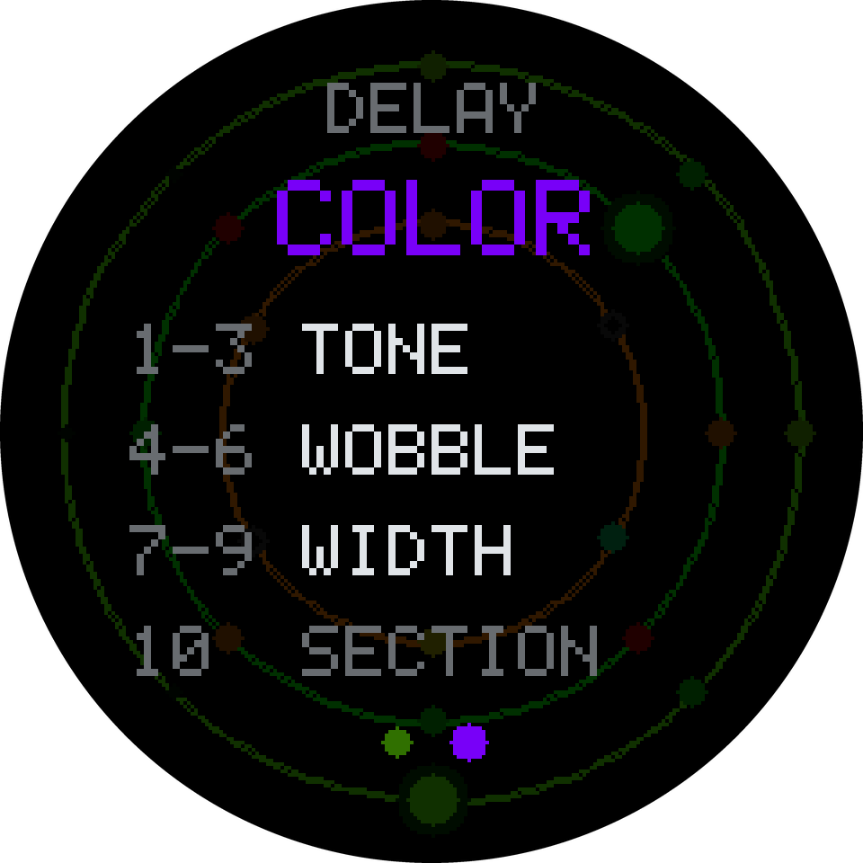
COLOR what they sound like
Each echo is fed from its oscillator after
the pan, so it starts in the same place in the stereo field. The echoes also go on to the
reverb with the dry sound. The master DELAY knob on page 1 scales all three SENDs at
once.
Time
Knobs
Function
Settings
Power-on
What it does
123
DIVISION
1/321/161/16T1/81/8T1/8.1/41/4T1/4.1/21/1
1/8., 1/4, 1/8T
The time between echoes as a note value of the tempo. A dot (1/8.)
is one and a half times as long: the classic dotted echo that bounces off the beat.
456
FEEDBACK
0 to 100
40
How much of each echo comes back again: a single repeat at 0, a long tail near 100.
789
SEND
0 to 100
0
How much of the oscillator goes into its delay. At 0 the delay is off.
Color
Knobs
Function
Settings
Power-on
What it does
123
TONE
500 HZ to 12.0 KHZ
4.0 KHZ
Each repeat passes through a gentle low-pass: lower settings make the echoes darker and
darker as they fade, like tape.
456
WOBBLE
0.0 to 3.0 MS
0.9 MS
A slow, random wander in the delay time, the way a tape machine drifts. It bends the
pitch of the echoes slightly.
789
WIDTH
0 to 100
100
At 0 the echoes stay where the oscillator is panned. At 100 they ping-pong: left, right,
left.
Try this
Delay only the slowest oscillator, with a dotted DIVISION: the echoes fill the gaps
between its notes.
FEEDBACK 80, TONE 1.5 KHZ, WOBBLE 2 MS: a dark dub echo that sinks away (see the recipe
Dub echoes).
8
Page 8 · one column per oscillator
MIX
Where each oscillator sits in the stereo picture, and how much of it goes
to the reverb.
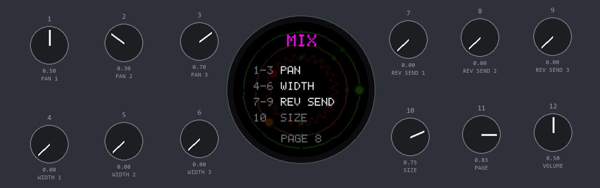
Page 8. PAN, WIDTH and REV SEND per oscillator; knob 10 is the reverb's
SIZE.
Knobs
Function
Settings
Power-on
What it does
123
PAN
L100, C, R100
C, L40, R40
Left to right. OSC 1 starts in the middle, the other two to either side.
456
WIDTH
0 to 100
0
Spreads the oscillator's two detuned halves apart, one left and one right. Wide and
shimmering with some DETUNE (page 2); at 0 the oscillator is a single point.
789
REV SEND
0 to 100
0
How much of the oscillator, echoes included, goes into the reverb. At 0 it stays dry.
10
SIZE
0 to 100
75
The reverb's size and length, from a small room to a long hall.
There is one reverb, shared by all three. Its tone is set on page 9 (DAMPING,
PREDELAY) and the master REVERB knob on page 1 scales all three sends at once.
Try this
Send only the high OSC 3 to the reverb, at about 60, with SIZE 90: a halo above a
dry, punchy low end.
DETUNE 15 on page 2 and WIDTH 100 on all three: the power-on patch becomes a wide
stereo wash.
9
Page 9 · whole instrument
KEY
Chord progressions, tuning, a few reverb details, and which picture the
screen shows.
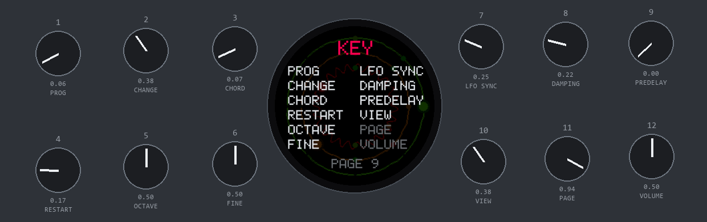
Page 9. Like MAIN, a whole-instrument page with a separate job for every
knob.
Knob
Function
Settings
Power-on
What it does
1
PROG
OFFPOP50SSADEPICJAZZVAMPCANONFALL
OFF
A chord progression that steps along by itself (table below). OFF holds the chord set
by CHORD.
2
CHANGE
1/2 BAR1 BAR2 BARS4 BARS
1 BAR
How long each chord of the progression lasts. Changes always land on the beat.
3
CHORD
I to VII
I
With PROG OFF: the chord to play, by its place in the key. Play your own progression by
turning it.
4
RESTART
FREEBARCHORD
FREE
When every pattern jumps back to its first step. FREE: never, the patterns run on and
drift. BAR: at every bar line. CHORD: at every chord change.
5
OCTAVE
−2 to +2
+0
Moves the whole instrument up or down by octaves.
6
FINE
−50 to +50 CT
+0 CT
Fine tuning, up to a quarter-tone either way, to play along with a record or another
instrument.
7
LFO SYNC
FREETEMPO
FREE
TEMPO locks all fifteen LFOs to the master clock, with RATE picking a note length (page 6).
8
DAMPING
12.0 KHZ to 1.0 KHZ
6.9 KHZ
The reverb's tone: turn right for a darker, softer reverb.
9
PREDELAY
0 to 250 MS
0 MS
A gap before the reverb starts. Keeps notes clear in front of a big reverb.
10
VIEW
RINGSPITCHWHEELSCOPE
PITCH
What the screen shows (p. 00).
The progressions
PROG
Degrees
In A minor (power-on)
In C major
POP
1 5 6 4
Am Em F Dm
C G Am F
50S
1 6 4 5
Am F Dm Em
C Am F G
SAD
6 4 1 5
F Dm Am Em
Am F C G
EPIC
1 6 3 7
Am F C G
C Am Em Bdim
JAZZ
2 5 1 1
Bdim Em Am Am
Dm G C C
VAMP
1 4
Am Dm
C F
CANON
1 5 6 3 4 1 4 5
Am Em F C Dm Am Dm Em
C G Am Em F C F G
FALL
1 7 6 5
Am G F Em
C Bdim Am G
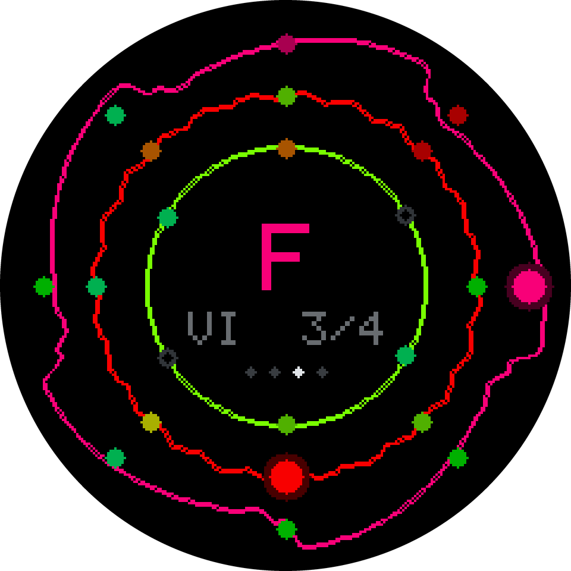
POP running in A minor, on its third chord: F, degree VI, chord 3 of 4.
The four dots are the beats of the bar.
A progression is written in scale degrees, so it works in any key: ROOT and SCALE on page 1
still transpose it while it runs. The chord changes on the bar line; a note already sounding
finishes, and the next one uses the new chord. With a chord key (SCALE set to MAJ, MIN7 and so
on) every chord of the progression takes that chord's quality.
The screen
Reading the rings
The screen shows what the three arps are playing, as it happens.
Once you can read it, you can see a pattern before you hear it.
OSC 1 is the outer ring.
OSC 2 is the middle ring.
OSC 3 is the inner ring. Each ring is cut
into as many arcs as its oscillator's LENGTH, starting at 12
o'clock and running clockwise. One arc is one step.
The playing step is the big dot with a halo. It moves on one arc with every step.
A rest is a hollow dot on a grey arc: a step that
DENSITY leaves out.
The line is the sound itself. It is the oscillator's real waveform: it swells
when a note starts and flattens as it fades, and higher notes fit more waves round the ring.
A drone is one unbroken ring.
The chord playing now, in the color of its root note.
Its numeral in the key. Lowercase means minor. When a progression runs, its
place in it follows, e.g. 3/4.
The beat: one dot for each beat of the bar.
Colors are notes
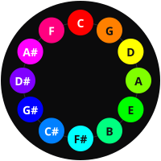
Every note has its own color, the same in every octave and on every view. The colors
run around the circle of fifths: notes a fifth apart get neighboring colors.
That puts notes that sound good together close in color. A root and its fifth (the
two notes of a FIFTHS pool) always look alike, and each chord of
a progression brings its own mix of colors to the screen.
The wheel is drawn on black because the brightest colors, yellow and cyan,
vanish on white paper. On the screen they glow.
Four views page 9 KEY, knob 10 VIEW
The same music can be drawn four ways. Pick one with VIEW; the
readout and page maps look the same on all of them.
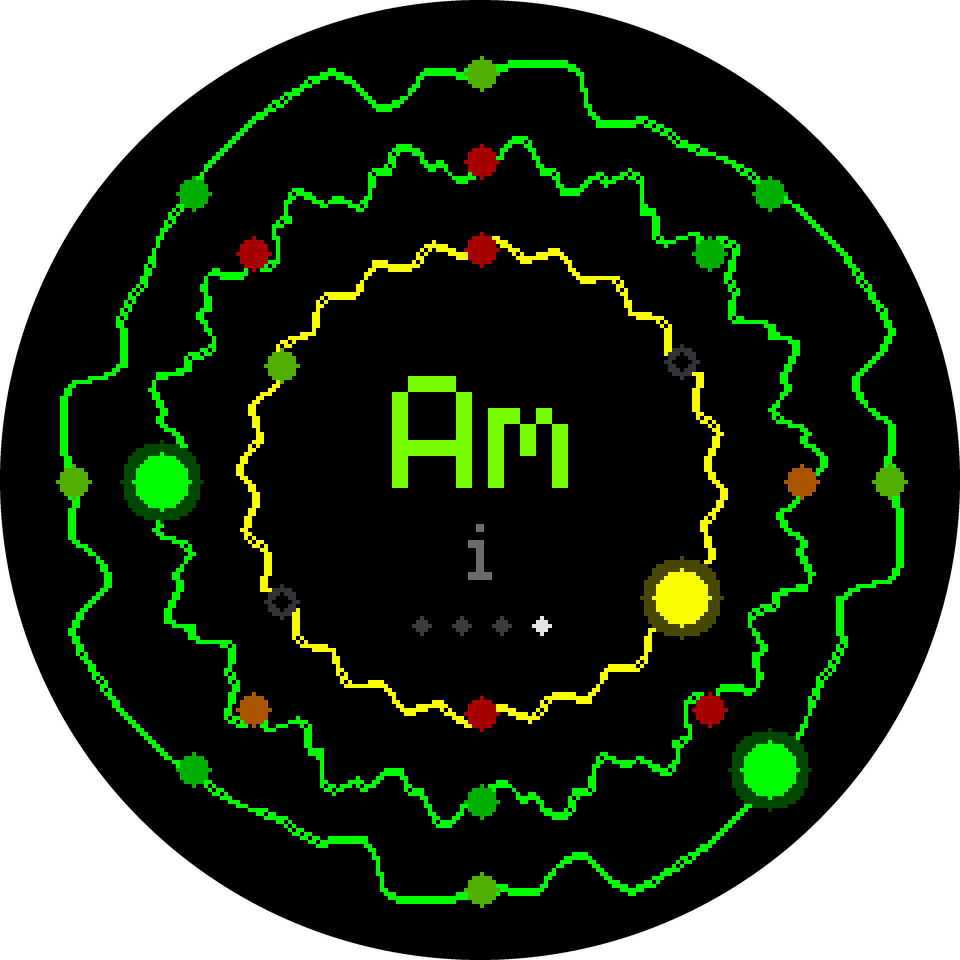
PITCH power-on
The rings, with each whole ring in the color of the note its oscillator is playing
right now. As the arp moves, the ring changes color: you watch the melody.
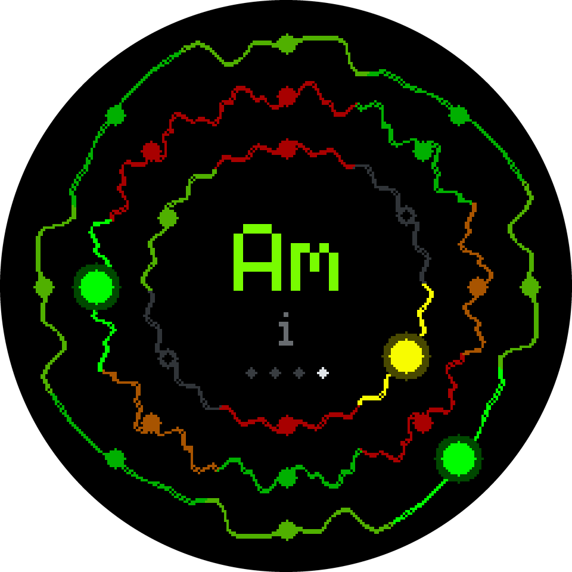
RINGS
Each arc keeps the color of the note on its step, so the whole pattern is on screen
at once, and you see it change when the chord does.
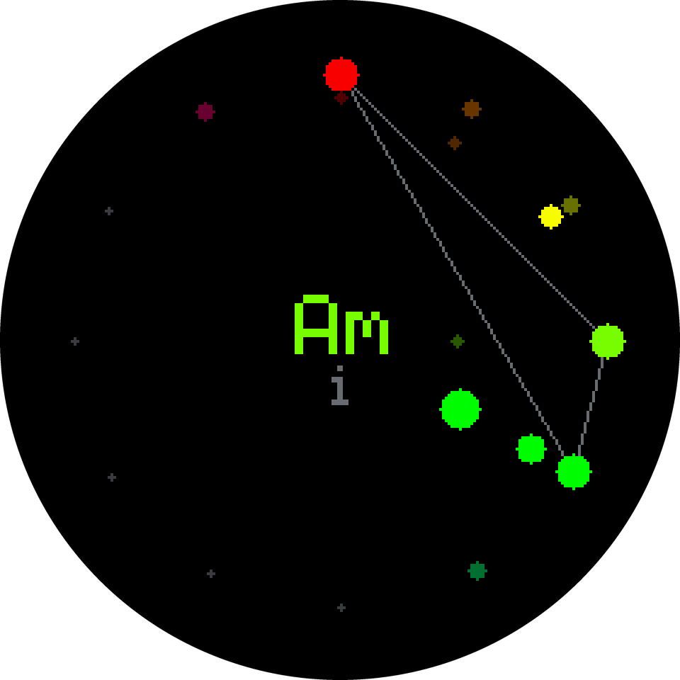
WHEEL
The twelve notes around the circle of fifths, C at the top. The chord's notes are
joined into a shape: its outline shows the kind of chord. Each oscillator's note is a
bright dot (biggest for OSC 1), nearer the rim the higher it plays.
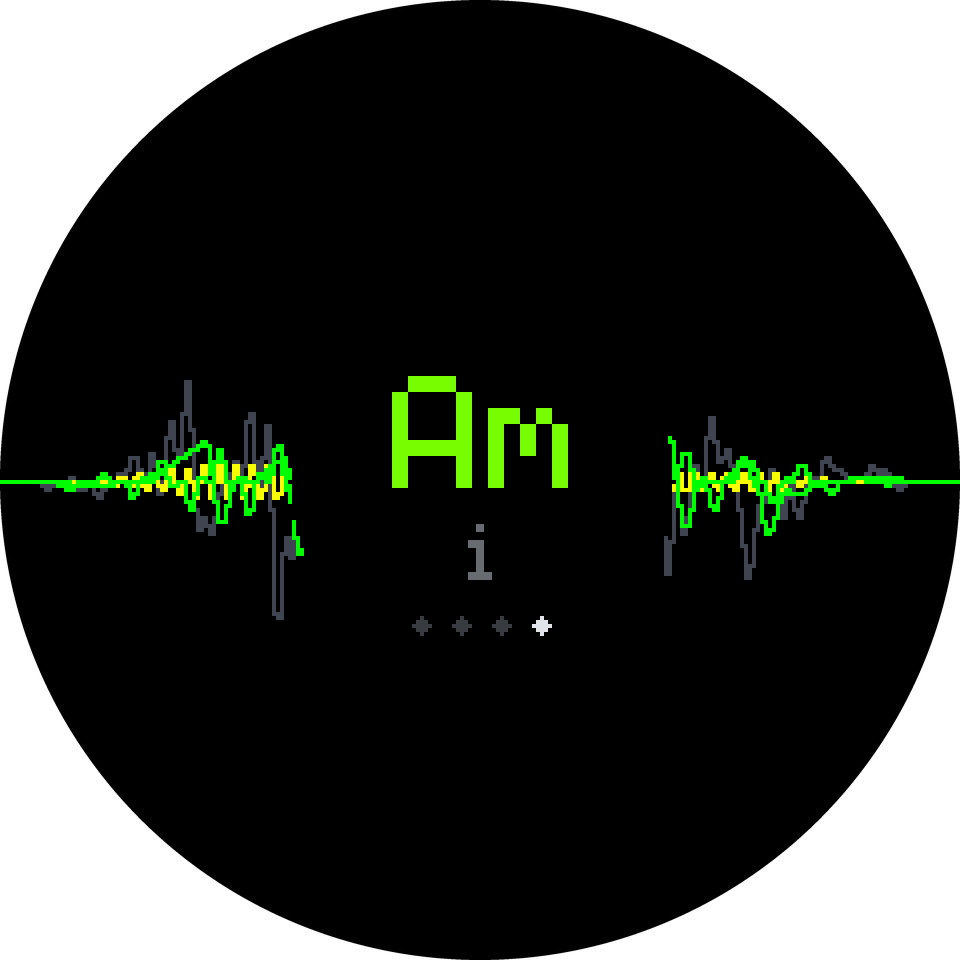
SCOPE
The three waveforms drawn over each other, each in its note's color. The plainest
view, and the best for hearing what SHAPE and the filter do.
Five patches
Recipes
Each recipe starts from the power-on sound, so switch Ammonite off and on
first (with knob 11 on page 1). Then make the settings in any order.
The values are exactly what
the screen's readout shows when the knob is right. The three columns are OSC 1, 2 and 3;
a grey dash means leave that one alone.
Appendix
Scales and chords
Every SCALE setting on page 1, spelled out from C. Turn ROOT and the same
pattern starts from another note.
Scales
SCALE
Notes from C
Character
MAJOR
C D E F G A B
bright, settled
MINOR
C D D# F G G# A#
dark; the power-on key
DORIAN
C D D# F G A A#
minor with a lift; soul and jazz
PHRYGIAN
C C# D# F G G# A#
dark and tense, Spanish flavor
LYDIAN
C D E F# G A B
major, floating and dreamy
MIXO
C D E F G A A#
major with a bluesy seventh
HARM MIN
C D D# F G G# B
minor with a dramatic leading note
PENTA
C D E G A
five notes, no clashes at all
PENTA MI
C D# F G A#
the minor five-note scale
BLUES
C D# F F# G A#
minor pentatonic plus the blue note
Chord keys
Past BLUES, SCALE turns into a chord. Then POOL KEY plays that
chord's notes, and a progression moves the chord through its parent scale (natural minor for
MIN, MIN7 and DIM; major for the rest), keeping its quality: a MIN7 key gives a progression of
minor sevenths.
SCALE
Notes from C
Character
MAJ
C E G
plain major triad
MIN
C D# G
plain minor triad
SUS2
C D G
open, neither major nor minor
SUS4
C F G
open, waiting to resolve
MAJ7
C E G B
soft, jazzy major
MIN7
C D# G A#
smooth minor
DOM7
C E G A#
bluesy, restless
DIM
C D# F#
tense, spooky
AUG
C E G#
strange, dreamlike
ADD9
C D E G
bright and airy
Appendix
Cheat sheet
Every knob on every page. Knob 11 is always PAGE, knob 12 always VOLUME.
Page
Section
Knobs 1–3
Knobs 4–6
Knobs 7–9
Knob 10
1MAIN
whole instrument
1–3 LEVEL
4 ROOT · 5 SCALE · 6 TEMPO
7 CUTOFF · 8 DELAY · 9 REVERB
SWING
2OSC
SHAPE
OCTAVE
DEGREE
DETUNE
3ARP
NOTES
MODE
POOL
RANGE
SECTION
3ARP
RHYTHM
DIVISION
LENGTH
GATE
3ARP
CHANCE
DENSITY
VARY
RATCHET
4ENVELOPE
AMP
ATTACK
DECAY
SUSTAIN
SECTION
4ENVELOPE
FILTER
ATTACK
DECAY
AMOUNT
4ENVELOPE
PITCH
AMOUNT
DECAY
GLIDE
5FILTER
CUTOFF
RESO
TYPE
DRIVE
6LFO
PITCH · CUTOFF · AMP · PAN · SHAPE
RATE
DEPTH
WAVE
TARGET
7DELAY
TIME
DIVISION
FEEDBACK
SEND
SECTION
7DELAY
COLOR
TONE
WOBBLE
WIDTH
8MIX
PAN
WIDTH
REV SEND
SIZE
9KEY
whole instrument
1 PROG · 2 CHANGE · 3 CHORD
4 RESTART · 5 OCTAVE · 6 FINE
7 LFO SYNC · 8 DAMPING · 9 PREDELAY
VIEW
On pages 2 to 8 each row's three knobs are OSC 1, 2
and 3, left to right, in both groups. Turning knob 10 on a page with sections, or knob 11,
never changes the sound; a knob takes over (and its setting jumps to it) when you turn it.